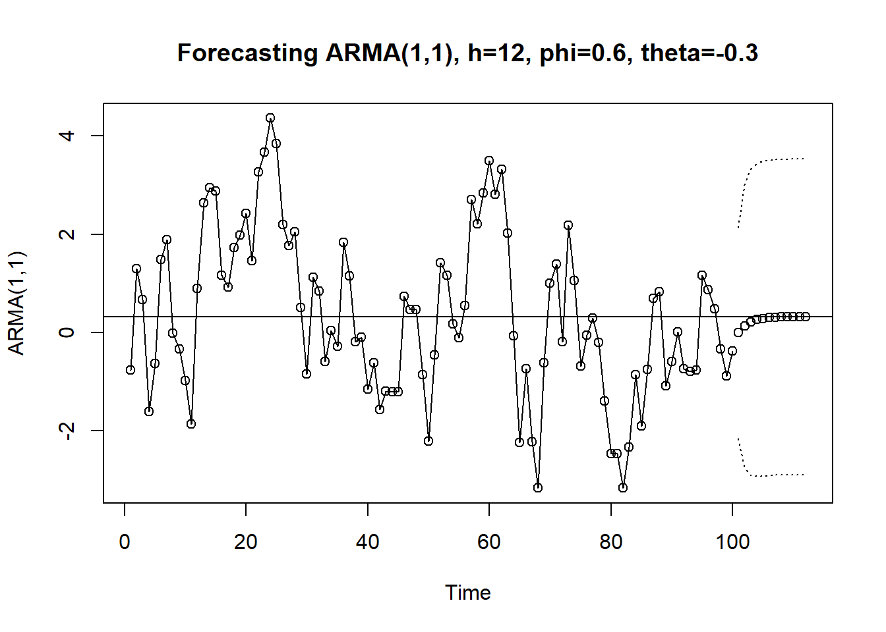

Code
library(TSA)| Step 1: Model Specification | Step 2: Parameter Estimation | Step 3: Model Checking | Step 4: Forecasting |
library(TSA)Based on Chapter 9 Forecasting, Cryer and Chan (2008).
Forecasting is the process of predicting future values of a time series based on its past values. Let’s introduce the notation for the time series and its forecast.
# Example of Forecasting AR(1) Model
data(ar1.s)
m1.ar1=arima(ar1.s,order=c(1,0,0))
plot(m1.ar1,n.ahead=12,type='b',
xlab='Time',ylab='AR(1)',
main = 'Forecasting AR(1) with 12 steps ahead, phi=0.9')
# add the horizontal line at the estimated mean ("intercept")
abline(h=coef(m1.ar1)[names(coef(m1.ar1))=='intercept'])# Example of Forecasting AR(2) Model
data(ar2.s)
m1.ar2=arima(ar2.s,order=c(2,0,0))
plot(m1.ar2,n.ahead=12,type='b',
xlab='Time',ylab='AR(2)',
main = 'Forecasting AR(2) with h=12 , phi1=1.5, phi2=-0.75')
# add the horizontal line at the estimated mean ("intercept")
abline(h=coef(m1.ar2)[names(coef(m1.ar2))=='intercept'])# Example of Forecasting MA(2) Model
data(ma2.s)
m1.ma2=arima(ma2.s,order=c(0,0,2))
plot(m1.ma2,n.ahead=12,type='b',
xlab='Time',ylab='MA(2)',
main = 'Forecasting MA(2), h=12, theta1=1, theta2=-0.6')
# add the horizontal line at the estimated mean ("intercept")
abline(h=coef(m1.ma2)[names(coef(m1.ma2))=='intercept'])# Example of Forecasting ARMA(1,1) Model
data(arma11.s)
m1.arma11=arima(arma11.s,order=c(1,0,1))
plot(m1.arma11,n.ahead=12,type='b',
xlab='Time',ylab='ARMA(1,1)',
main = 'Forecasting ARMA(1,1), h=12, phi=0.6, theta=-0.3')
abline(h=coef(m1.arma11)[names(coef(m1.arma11))=='intercept'])
Recall, random walk with a drift is defined as \[Y_t = Y_{t-1} + \delta + e_t\], where \(e_t\) is a white noise error term and \(\delta\) is the drift parameter. The forecast for \(\hat{Y}_{t}(h)\) is given by \(\hat{Y}_t(h) = Y_t + h\,\delta\).
A deterministic trend is a trend that can be predicted exactly using a mathematical function. For example, a linear trend can be represented by the equation \(Y_t = \beta_0 + \beta_1 t + e_t\), where \(e_t\) is a white noise error term. In general, a deterministic trend can be represented by the equation \[ Y_t = \mu_t + e_t, \] where \(\mu_t\) is a deterministic function of time and \(e_t\) is a white noise error term.
The forecasted value for \(Y_{t+h}\) is given by \(\hat{Y}_t(h) = \mu_{t+h}\). The forecast error is given by \(e_t(h) = Y_{t+h} - \hat{Y}_t(h)=e_{t+h}\).
# Exhibit 9.2
# append 2 years of missing values to the tempdub data as we want to forecast
# the temperature for two years.
data(tempdub)
tempdub1=ts(c(tempdub,rep(NA,24)),
start=start(tempdub),
freq=frequency(tempdub))
# creates the first pair of harmonic functions and then fit the model
har.=harmonic(tempdub,1)
m5.tempdub=arima(tempdub,order=c(0,0,0),xreg=har.)
m5.tempdub
Call:
arima(x = tempdub, order = c(0, 0, 0), xreg = har.)
Coefficients:
intercept cos(2*pi*t) sin(2*pi*t)
46.2660 -26.7079 -2.1697
s.e. 0.3056 0.4322 0.4322
sigma^2 estimated as 13.45: log likelihood = -391.44, aic = 788.88# create the harmonic functions over the period of forecast.
newhar.=harmonic(ts(rep(1,24), start=c(1976,1),freq=12),1)
# Compute and plot the forecasts.
plot(m5.tempdub,n.ahead=24,
n1=c(1972,1),newxreg=newhar.,
type='b',ylab='Temperature',xlab='Year')AR(1) model was fitted to the color property data. The forecast is based on the fitted AR(1) model and can be used to predict future values of the time series.
data(color)
m1.color=arima(color,order=c(1,0,0))
# Exhibit 9.3
data(color)
m1.color=arima(color,order=c(1,0,0))
plot(m1.color,n.ahead=12,type='b', xlab='Time', ylab='Color Property')
# add the horizontal line at the estimated mean ("intercept")
abline(h=coef(m1.color)[names(coef(m1.color))=='intercept'])The Canadian hare abundance series was fitted by working with the square root of the abundance numbers and then fitting an AR(3) model. Notice how the forecasts mimic the approximate cycle in the actual series even when we forecast with a lead time out to 25 years.
# Exhibit 9.4
data(hare)
# fixed the AR(2) coefficient to be 0 via the fixed argument.
m1.hare=arima(sqrt(hare),order=c(3,0,0), fixed=c(NA,0,NA,NA))
plot(m1.hare, n.ahead=25,type='b',xlab='Year',ylab='Sqrt(hare)')
abline(h=coef(m1.hare)[names(coef(m1.hare))=='intercept'])